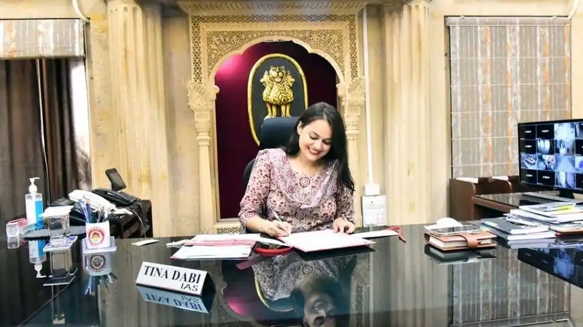

GOVERNMENT SERVENT
What is a Government Servant?
Types of Government Soldier
1. Indian Administrative Services
These civil services hold a very high stand in the matters of Union as well as State Government. These services involve the vital strategic positions and also represent Union, State or any PSU at international organisations like the International Monetary Fund (IMF) and World Trade Organisation (WTO).
2. Indian Foreign Services
After selection under the civil service, the newcomers have to undergo a concise training programme that gives them a detailed knowledge of learning diplomatic qualities and skills. The job of officers under the Indian Foreign Services comprises representing India’s interests on international matters domestically at home or even abroad.
3. Indian Police Services
The officers under this civil service also have to go through a preliminary training period. The Indian Police Services involves the matters of the public peace, terrorism control, VIP security, smuggling matters, drug trafficking, investigation, economic offence and other issues related.
4. Indian Revenue Services
The Indian Revenue services involve the functions of collection of revenue, development and allocation of revenue along with security and governance collected on a macro level. The officer under this service administers the processes of taxes, formulation and implementation of tax and revenue policies along with investigation on revenue matters.
5. Indian Railway Traffic Services
Once selected under this civil service, the candidates undergo a Railway Foundation Course along with specialised training to serve the Indian railways at key managerial positions. The officers under this service manage the travellers’ transportation along with the production and sale of goods and output through rail transportation.
-Indian Trade Services (ITS)
– Railway Protection Services (RPF)
– Indian Postal Services (IPoS)
– Indian Defense Estates Services (IDES)
– Indian Foreign Services (IFS)
– Indian Audit and Account Service (IAAS)
– Indian Corporate Law Services (ICLS)
– Indian Railway Accounts Services (IRAS)
– Indian Railway Traffic Services (IRTS)
– Indian Ordnance Factories Service (IOFS)
– Indian Civil Accounts Services (ICAS)
– Indian Communication Finance Services (ICFS)
– Indian Revenue Trade Services (IRS)
– Indian Railway Personnel Service (IRPS)
– Indian Information Service (IIS).
How to become government Servant?
School Level Preparation
To become a civil servant, one must choose an arts stream with subjects like public policies, administration, political science at a senior secondary level.
After qualifying 10th, while pursuing your senior secondary classes (10+2), start preparing for public services exams such as UPSC to get the best job in the government sector.
Also Check: Art Courses
Graduation Level Preparation
After qualifying 10+2 exams, you need to have at least 75% to get admitted to a decent college and complete a 3 years graduation degree.
At the bachelors level, you can pursue BA in Public Policy and Administration or BA in political science.
It is recommended that post your graduation, you should enroll yourselves for a public services coaching to get some experience about the competition level.
Post Graduation Level Preparation
There is no need to pursue a PG Course as the only eligibility criteria to be a civil servant is a Bachelor degree course.
But if you want to get in-depth knowledge about the respective field even after that you can start your preparation.
You can pursue MA in public policy or MA in public administration to become a civil servant in India.